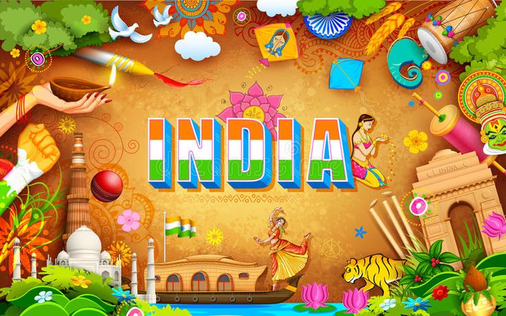
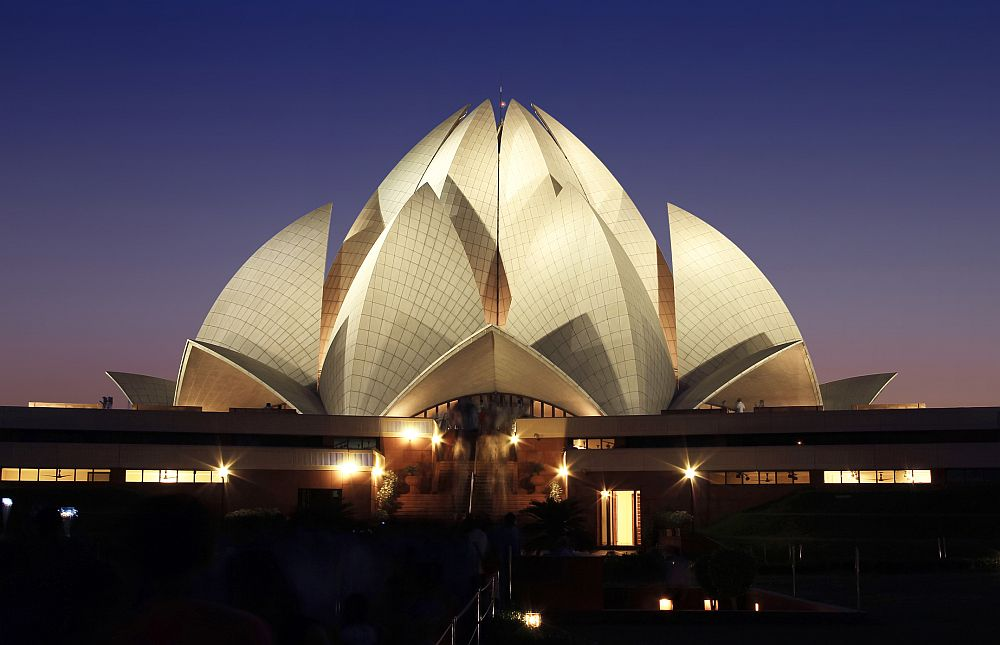
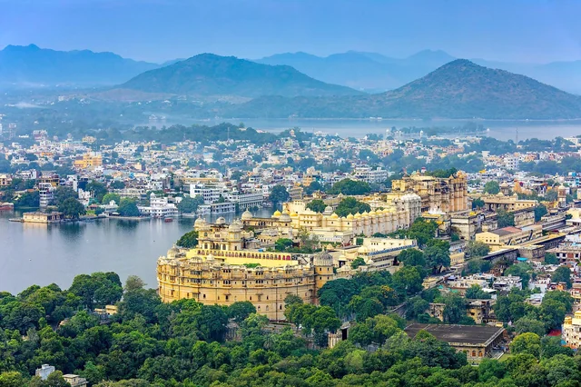
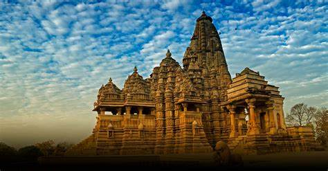
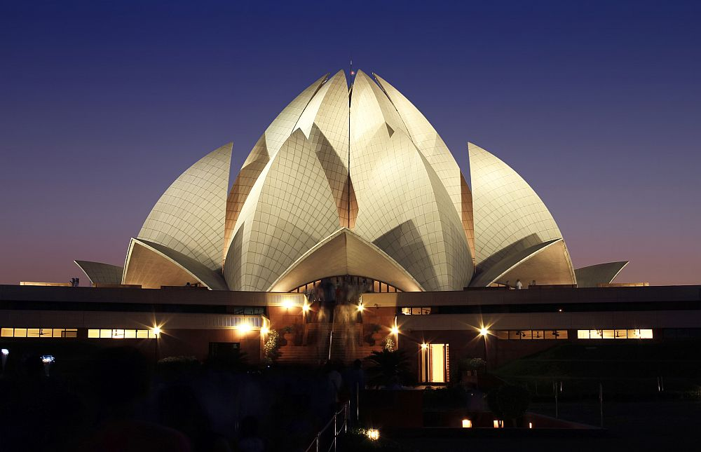
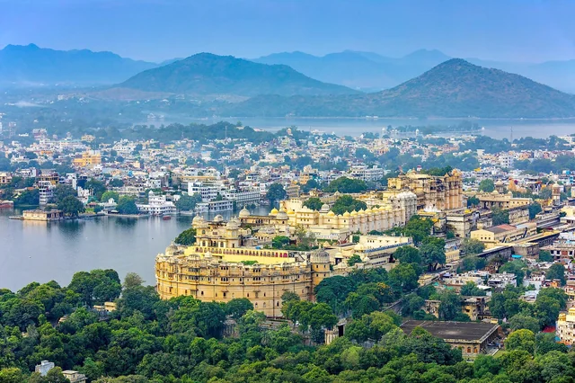
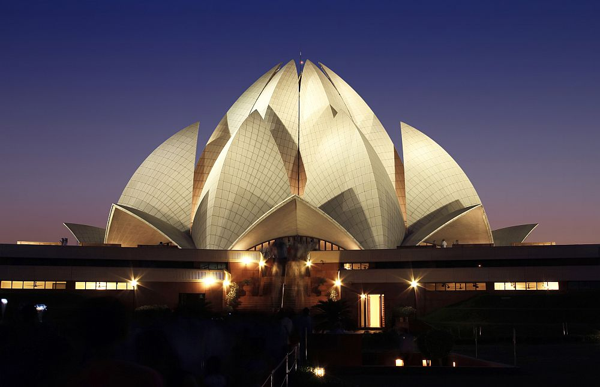
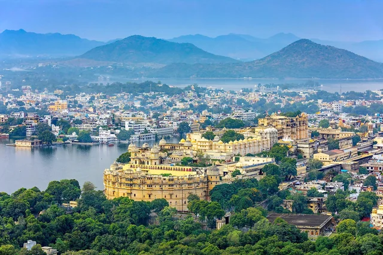
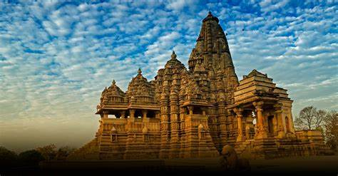
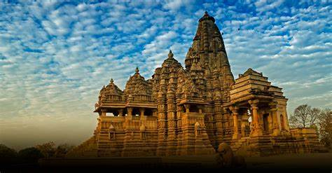

One of the oldest civilisations in the world, India is a mosaic of multicultural experiences. With a rich heritage and myriad attractions, the country is among the most popular tourist destinations in the world. It covers an area of 32, 87,263 sq. km, extending from the snow-covered Himalayan heights to the tropical rain forests of the south. As the 7th largest country in the world, India stands apart from the rest of Asia, marked off as it is by mountains and the sea, which give the country a distinct geographical entity. Fringed by the Great Himalayas in the north, it stretches southwards and at the Tropic of Cancer, tapers off into the Indian Ocean between the Bay of Bengal on the east and the Arabian Sea on the west. As you travel the expanse of the country, you are greeted by diverse nuances of cuisines, faiths, arts, crafts, music, nature, lands, tribes, history and adventure sports. India has a mesmeric conflation of the old and the new. As the bustling old bazaars rub shoulders with swanky shopping malls, and majestic monuments accompany luxurious heritage hotels, the quintessential traveller can get the best of both worlds. Head to the mountains, enjoy a beach retreat or cruise through the golden Thar, India has options galore for all.
We are wating for you all.

Tourist Places in India



Indian Destinations
Delhi
Taj Mahal
Agra Fort
Hampi
Udaipur
Golden Temple
Items to Pack:
Comfortable walking shoes
Sunscreen and hat
Camera or smartphone for photos
Water bottle
Light snacks
Watch this video to learn more about Taj Mahal History
 



 
